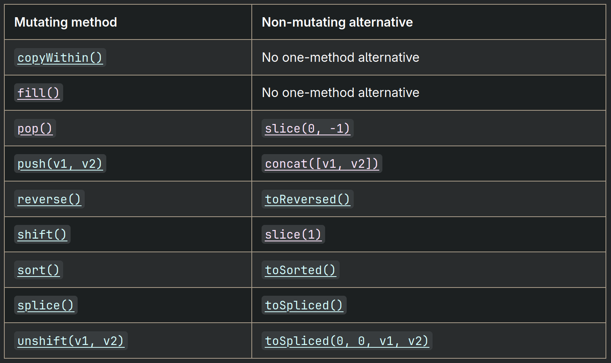
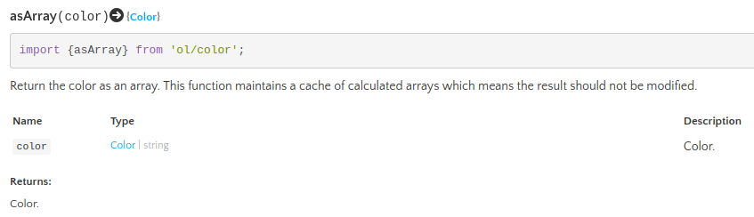
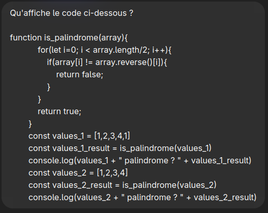
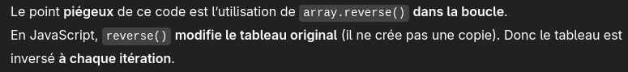
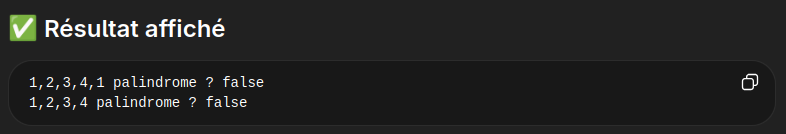
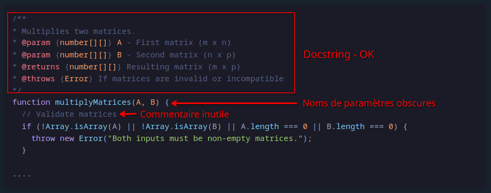
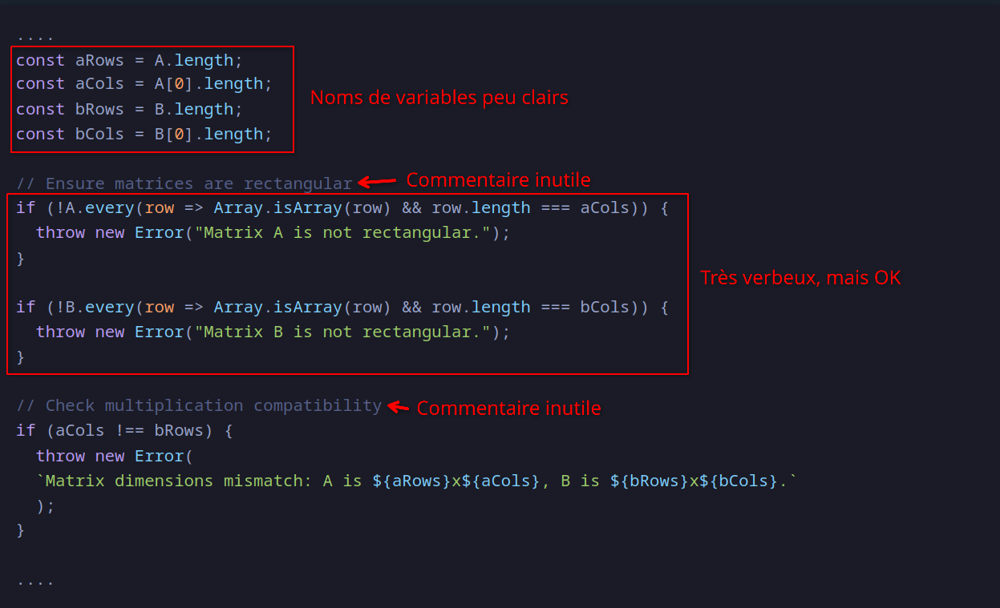
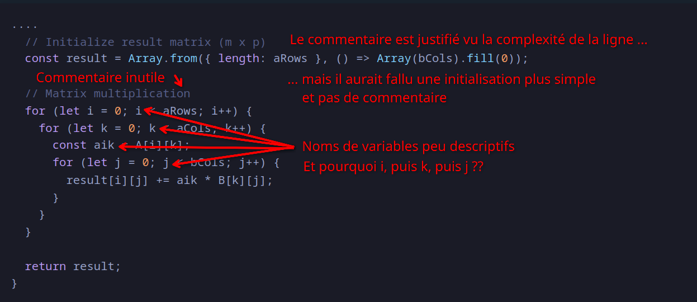

Programmation
Les problèmes récurrents
Problème n° 1 : Dépendances et code spaghetti

Cela permet
On produit du code de qualité pour les humains, pas pour la machine
« Rendez les choses aussi simples que possible, mais pas plus simples. »
Albert Einstein
Plus concrètement :
Tout code doit être spontanément évidemment juste
Problème n° 1 : Dépendances et code spaghetti
def get_x_y_centered(xs, ys, side, min_y_extent):
if len(xs) <= 0:
return np.empty(0)
x_min, y_min = np.min(xs), np.min(ys)
x_extent = np.max(xs) - x_min
y_extent = max(np.max(ys) - y_min, min_y_extent)
resolution = x_extent / (side - 1) if x_extent > y_extent else y_extent / (side - 1)
if resolution <= 0:
return np.empty(0)
xs_centered = ((xs - x_min + (side * resolution - x_extent) / 2.0) / resolution)
ys_centered = ((ys - y_min + (side * resolution - y_extent) / 2.0) / (-resolution))
return np.column_stack((xs_centered, ys_centered)).astype(np.int32)
Problème n° 1 : Dépendances et code spaghetti
Problème n° 1 : Dépendances et code spaghetti

Problème n° 1 : Dépendances et code spaghetti

https://www.researchgate.net/figure/Class-Dependencies-of-Like-UCP-Program_fig2_329420327
Problème n° 1 : Dépendances et code spaghetti
Les solutions :

Problème n° 1 : Dépendances et code spaghetti
Les solutions :

Problème n° 1 : Dépendances et code spaghetti
Les solutions :
Voir :
Problème n° 2 : Les effets de bord
function is_palindrome(array){
for(let i=0; i < array.length/2; i++){
if(array[i] != array.reverse()[i]){
return false;
}
}
return true;
}
const values_1 = [1,2,3,4,1]
const values_1_result = is_palindrome(values_1)
console.log(values_1 + " palindrome ? " + values_1_result)
const values_2 = [1,2,3,4]
const values_2_result = is_palindrome(values_2)
console.log(values_2 + " palindrome ? " + values_2_result)
Problème n° 2 : Les effets de bord
function is_palindrome(array){
for(let i=0; i < array.length/2; i++){
if(array[i] != array.reverse()[i]){
return false;
}
}
return true;
}
const values_1 = [1,2,3,4,1]
const values_1_result = is_palindrome(values_1)
console.log(values_1 + " palindrome ? " + values_1_result) // 1,2,3,4,1 palindrome ? false
const values_2 = [1,2,3,4]
const values_2_result = is_palindrome(values_2)
console.log(values_2 + " palindrome ? " + values_2_result) // 4,3,2,1 palindrome ? false
// L'affichage de values_2 est inversé ?!
Problème n° 2 : Les effets de bord
function is_palindrome(array){
for(let i=0; i < array.length/2; i++){
if(array[i] != array.reverse()[i]){
return false;
}
}
return true;
}
const values_1 = [1,2,3,4,1]
console.log(values_1 + " palindrome ? " + is_palindrome(values_1))
const values_2 = [1,2,3,4]
console.log(values_2 + " palindrome ? " + is_palindrome(values_2))
Problème n° 2 : Les effets de bord
function is_palindrome(array){
for(let i=0; i < array.length/2; i++){
if(array[i] != array.reverse()[i]){
return false;
}
}
return true;
}
const values_1 = [1,2,3,4,1]
console.log(values_1 + " palindrome ? " + is_palindrome(values_1)) // 1,2,3,4,1 palindrome ? false
const values_2 = [1,2,3,4]
console.log(values_2 + " palindrome ? " + is_palindrome(values_2)) // 1,2,3,4 palindrome ? false
Problème n° 2 : Les effets de bord
class NumberArray {
constructor(content){ // On suppose que le tableau ne contient que des nombres
this.content = content;
}
push(value){ // On suppose aussi qu'on ne peut ajouter que des nombres
this.content.push(value);
}
pop(){ // Retire un nombre du tableau
this.content.pop();
}
mean(){
let sum = 0;
for(const val in this.content) sum += val;
return sum / this.content.length;
}
// ... éventuellement d'autres fonctions
}
Problème n° 2 : Les effets de bord
|
|
Problème n° 2 : Les effets de bord
|
|
Problème dans ce cas : Les objets ont un état interne, qui peut être modifié dans n'importe quel ordre
Problème n° 2 : Les effets de bord
|
|
Problème n° 2 : Les effets de bord
|
|
Problème dans ce cas : Le passage par référence vaut aussi pour les objets, ici les deux objets modifient t1
Problème n° 2 : Les effets de bord
Les solutions :
const P1 = [5, 2];
const P2 = [6, 3];
if(merge_points){
P2 = P1; // Erreur : P2 est constant
}
// ... reste du code
P2[0] = 8; // Si P2 n'était pas constant, cela aurait pu modifier P2 et P1
Mais attention ! Cela garanti seulement que la valeur ne sera pas réassignée. Un tableau constant peut être modifié (voir exemple sur les palindromes). Utiliser des constantes n'est pas une solution complète.
Problème n° 2 : Les effets de bord
Les solutions :
Un objet immuable est un objet dont l'état ne peut pas être modifié
class NumberArray {
#content; //le # indique un attribut privé. Il ne peut être accédé en dehors de la classe.
constructor(content){
this.#content = Array.from(content); // copie du tableau, pas de problèmes de référence
}
push(value){
return new NumberArray(this.#content.concat([value])); // concat retourne un nouveau tableau
}
pop(){
return new NumberArray(this.#content.slice(0, -1)); // slice retourne un nouveau tableau
}
// ... etc
}
Problème n° 2 : Les effets de bord
Les solutions :
Quel est l'inconvénient d'un objet immuable ?
Son contenu est dupliqué à chaque opération. Pour de gros objets et mémoire ce n'est pas faisable.
Parfois, on a besoin d'objets partagés entre plusieurs parties du programme, sans quoi le code devient beaucoup plus complexe.
Problème n° 2 : Les effets de bord
Les solutions :

Problème n° 2 : Les effets de bord
Les solutions :
// Scala
def countVowels(str: String): Int =
// Toutes les valeurs sont des constantes par défaut
val vowels = Set('a', 'e', 'i', 'o', 'u')
// Les opérations sont toutes immuables et peuvent s'enchaîner
str.map(letter => if (vowels contains letter) 1 else 0).foldLeft(0)(_ + _)
val vowelCount = countVowels("hello scala programming")
println(s"Number of vowels: "+vowelCount) // Affichera "Number of vowels: 7"
Problème n° 2 : Les effets de bord
Les solutions :
Il existe des méthodes similaires en JavaScript, qui s'inspirent de la programmation fonctionnelle:
Problème n° 3 : La clarté et la lisibilité
Quelques conseils généraux
const monRectangle = ....const monRectangle = new Rectangle()const NB_DIMENSIONS = 3isRetired plutôt que isOld
Problème n° 3 : La clarté et la lisibilité
Conseils pour nommer des variables
average, surname, mainCharacter, frontColor, etcnumberTiles (entier), isValid (boolean), resolutionsList (array), etccenterCoordinatesPerTile, et non ctrCooPTile
function arraySum(table){
let sum = 0; // "sum" acceptable, car évident dans ce contexte
for(let i=0; i<table.length; i++){ // "i" acceptable, car la boucle ne fait qu'une ligne
sum += table[i]; // et qu'il s'agit bien d'un itérateur
}
return sum;
}
Problème n° 3 : La clarté et la lisibilité
Conseils pour nommer des variables
function mul(m1, m2){
let res = new Array(m1.length);
for (let i = 0; i < m1.length; i++){
res[i] = new Array(m2[0].length);
}
for (let i = 0; i < m1.length; i++) {
for (let ii = 0; ii < m2[0].length; ii++) {
res[i][ii] = 0;
for (let iii = 0; iii < m2.length; iii++)
res[i][ii] += m1[i][iii] * m2[iii][ii];
}
}
return res;
}
Problème n° 3 : La clarté et la lisibilité
Conseils pour nommer des variables
function matrix_multiply(matrix1, matrix2){
const result_width = matrix1.length;
const result_height = matrix2[0].length;
let result = new Array(result_width);
for (let i = 0; i < result_width; i++){
result[i] = new Array(result_height);
}
for (let x = 0; x < result_width; x++) {
for (let y = 0; y < result_height; y++) {
result[x][y] = 0;
for (let i = 0; i < matrix2.length; i++)
result[x][y] += matrix1[x][i] * matrix2[i][y];
}
}
return result;
}
Problème n° 3 : La clarté et la lisibilité
Conseils pour nommer des fonctions
toggleVisibility, changeColor, increaseLife, resetState, etctable.mean(), warrior.takeDamage(), map.resetOrientation(), etcobject.compute(), shape.getSize(), color.display()Problème n° 3 : La clarté et la lisibilité
Quelques conseils supplémentaires
Problème n° 3 : La clarté et la lisibilité
Les commentaires et le self-documenting code
Quand faut-il utiliser les commentaires ?
Ou plutôt : Quand ne faut-il pas les utiliser ?
Problème n° 3 : La clarté et la lisibilité
Les commentaires et le self-documenting code
Ne pas utiliser de commentaire
function arraySum(table){
let sum = 0;
// Parcours tous les éléments du tableau un par un
for(let i=0; i<table.length; i++){
sum += table[i];
}
return sum;
}
Ici le commentaire ne sert à rien, il n'apporte rien par rapport à la ligne d'en dessous
Problème n° 3 : La clarté et la lisibilité
Les commentaires et le self-documenting code
Ne pas utiliser de commentaire
// Calcul la somme d'un tableau
function sum(t){
let s = 0;
for(let i=0; i<t.length; i++){
s += t[i];
}
return s;
}
Ici il est préférable de nommer correctement la fonction et ses variables
Problème n° 3 : La clarté et la lisibilité
Les commentaires et le self-documenting code
Le code doit-être self-documenting c'est-à-dire qu'il doit être suffisamment clair pour ne pas nécessiter de commentaire.
La plupart du temps, quand on veut écrire un commentaire, c'est qu'on a mal nommé quelque chose, ou qu'il faut simplifier le code.
Problème n° 3 : La clarté et la lisibilité
Les commentaires sont utilisés presque exclusivement pour
/** Return the color as an array. This function maintains a cache of calculated
* arrays which means the result should not be modified.
* @param {Color|string} color Color.
* @return {Color} Color.
* @api */
export function asArray(color) {
if (Array.isArray(color)) {
return color;
}
return fromString(color);
}
Problème n° 3 : La clarté et la lisibilité
Les commentaires sont utilisés presque exclusivement pour

Que font ces deux fonctions ?
|
|
Que font ces deux fonctions ?
|
Pour chaque élément, on parcours tout le tableau et on inverse toutes les paires qui ne sont pas dans le bon ordre. |
Que font ces deux fonctions ?
|

|
La loi d'Amdahl :
The overall performance improvement gained by optimizing a single part of a system is limited by the fraction of time that the improved part is actually used
Autrement dit : Il est peu utile d'optimiser une partie du code qui ne prend qu'une petite fraction du temps total d'exécution
Il faut éviter les optimisations prématurées ("premature optimization is the root of all evil", Donald Knuth)
La seule méthode efficace : mesurer les temps d'exécution et optimiser en fonction
Demandons à ChatGPT :
(https://chatgpt.com/share/69af4fde-2250-800d-9649-3403e039f681)

D'emblée le problème est identifié...

... et la réponse finale et fausse... oups...

Avec plusieurs essais, la réponse est parfois correcte, parfois non.
Claude (Sonnet 4.6) produit le même résultat que ChatGPT, Gemini ne se trompe pas et répond correctement.
Est-ce que ChatGPT fait du bon code ? :
(https://chatgpt.com/share/69af51f4-eec0-800d-8575-bcab42bf8ff7)
/**
* Multiplies two matrices.
* @param {number[][]} A - First matrix (m x n)
* @param {number[][]} B - Second matrix (n x p)
* @returns {number[][]} Resulting matrix (m x p)
* @throws {Error} If matrices are invalid or incompatible
*/
function multiplyMatrices(A, B) {
// Validate matrices
if (!Array.isArray(A) || !Array.isArray(B) || A.length === 0 || B.length === 0) {
throw new Error("Both inputs must be non-empty matrices.");
}
....

....
const aRows = A.length;
const aCols = A[0].length;
const bRows = B.length;
const bCols = B[0].length;
// Ensure matrices are rectangular
if (!A.every(row => Array.isArray(row) && row.length === aCols)) {
throw new Error("Matrix A is not rectangular.");
}
if (!B.every(row => Array.isArray(row) && row.length === bCols)) {
throw new Error("Matrix B is not rectangular.");
}
// Check multiplication compatibility
if (aCols !== bRows) {
throw new Error(
`Matrix dimensions mismatch: A is ${aRows}x${aCols}, B is ${bRows}x${bCols}.`
);
}
....

....
// Initialize result matrix (m x p)
const result = Array.from({ length: aRows }, () => Array(bCols).fill(0));
// Matrix multiplication
for (let i = 0; i < aRows; i++) {
for (let k = 0; k < aCols; k++) {
const aik = A[i][k];
for (let j = 0; j < bCols; j++) {
result[i][j] += aik * B[k][j];
}
}
}
return result;
}
